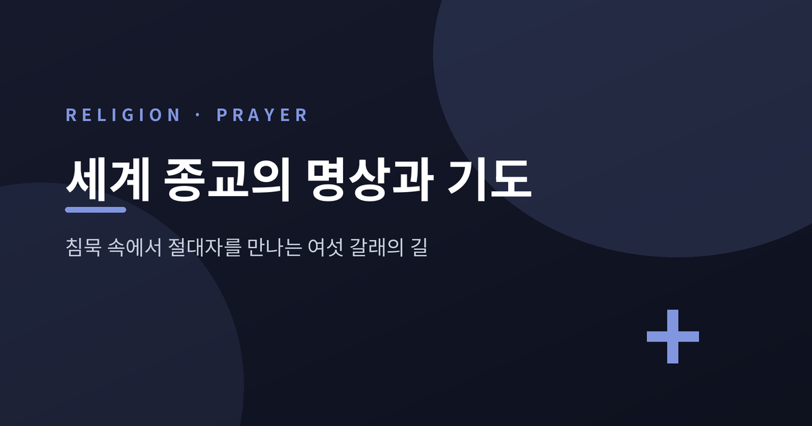
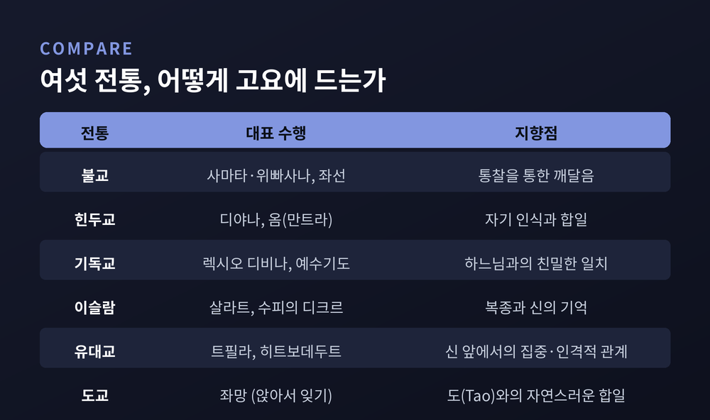
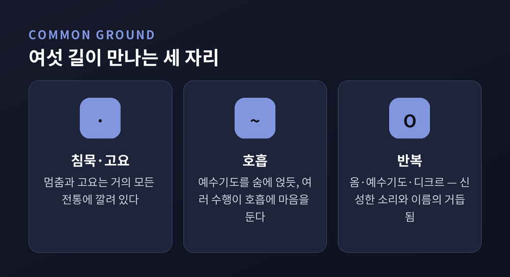

침묵 속에서 절대자를 만나는 서로 다른 길

이번 글에서는 세계 여섯 종교의 명상과 기도 전통을 나란히 정리해 보겠습니다. 불교, 힌두교, 기독교, 이슬람, 유대교, 도교가 각각 어떤 방식으로 고요에 들어가는지 살펴봅니다. 어느 길이 옳다는 이야기가 아니라, 서로 다른 길이 어디서 갈리고 어디서 만나는지를 짚어 보는 글입니다.
불교 명상에는 두 축이 있습니다.
하나는 사마타(止)입니다. 마음을 한 대상에 모아 고요와 평정에 이르는 길입니다. 이 집중의 상태가 사마디(三昧)로 이어집니다.
다른 하나는 위빠사나(觀)입니다. 판단을 내려놓고 현재 순간을 그대로 관찰합니다. 무상·고·무아라는 진리에 대한 통찰이 지혜로 자랍니다.
흔히 둘을 별개의 기법으로 소개합니다. 다만 붓다 자신은 이 둘을 함께 길러야 할 마음의 두 성질로 말했을 뿐, 독립된 두 명상으로 가르치지 않았다는 해석도 있습니다. 두 전통의 관계는 불교 안에서 오래 논의되어 왔습니다.
선(禅) 전통의 좌선은 결이 조금 다릅니다. 단계를 밟아 올라가기보다, 일어나는 모든 것에 열린 채 '그저 앉는다(只管打坐)'는 통합된 수행을 강조합니다.
힌두 전통에서 명상은 디야나(dhyana)라 불립니다. 요가 수행에 채택되어 사마디와 자기 인식에 이르는 길로 여겨집니다.
이 전통에서 두드러지는 것은 소리입니다. 옴(ॐ)은 '근원의 소리'로 불립니다. 베다 전통은 옴의 진동 안에 존재했고 존재할 모든 진동이 담겨 있다고 봅니다.
명상의 대상은 한 가지로 정해져 있지 않습니다. 신성한 형상일 수도, 눈 덮인 산이나 고요한 호수 같은 자연일 수도, 옴처럼 리듬을 타고 반복되는 음절일 수도 있습니다.
요가 수트라는 옴을 이슈와라, 곧 지고의 의식에 대한 언어적 표현으로 봅니다. 그 소리를 거듭 읊으며 의미를 관조하는 일이 수행자를 신성한 의식과 잇는다고 설명합니다.

기독교 관상 수행의 목표는 도덕적 정화와 더 깊은 말씀 이해, 그리고 하느님·그리스도와의 친밀한 일치입니다.
동방에는 헤시카즘이 있습니다. 그리스어 '헤시키아'는 고요와 침묵을 뜻합니다. 끊임없는 예수기도로 그 고요를 구합니다. 호흡과도 잇닿아 있습니다. 들이쉴 때 "주 예수 그리스도, 하느님의 아들", 내쉴 때 "저에게 자비를 베푸소서, 죄인입니다"로 한 문장을 완성합니다.
서방에는 렉시오 디비나가 있습니다. '거룩한 독서'라는 뜻입니다. 읽기, 묵상, 기도, 관상의 네 단계를 차례로 오릅니다.
같은 흐름이 동·서방에서 다르게 자랐습니다. 헤시카즘은 동일한 문구의 반복을 중심에 둡니다. 렉시오 디비나는 그때그때 다른 성경 구절을 사용합니다. 한쪽은 같은 말을 거듭하고, 다른 쪽은 매번 새 본문을 마주하는 셈입니다.
이슬람에는 살라트가 있습니다. 다섯 기둥의 하나로, 모든 무슬림에게 부과된 매일의 의례 기도입니다.
정해진 시각에 하루 다섯 번 행합니다. 새벽의 파즈르부터 저녁의 이샤까지, 매번 정결례를 앞세웁니다. 메카 방향을 향해 라카라 불리는 자세를 취하고 꾸란을 낭송합니다. 신체와 공동체성이 두드러지는 기도입니다.
수피 전통에는 디크르가 있습니다. '기억·회상'을 뜻합니다. 넓게는 신을 기억하는 모든 행위를 가리키지만, 좁게는 알라의 이름을 거듭 부르며 자신을 신의 임재에 여는 명상을 말합니다.
방식은 소리 내는 디크르와 침묵의 디크르로 나뉩니다. 많은 수피가 침묵을 으뜸으로 여깁니다. 다만 이는 단정적 합의라기보다 종단마다 다른 강조점입니다.

유대 전통에서 기도(트필라)는 명상과 나뉘지 않습니다. 자료들은 트필라를 '유대 명상의 정수'라 표현하기도 합니다.
여기서 중요한 말이 카바나입니다. 신 앞에 있다는 의식, 그리고 자기가 무엇을 말하는지에 대한 의식을 뜻합니다. 남에게 보이거나 무언가를 증명하려는 동기에 흐려지지 않은 순수한 의도로 기도하려는 마음입니다.
히트보데두트라는 수행도 있습니다. '자기 고립'이라는 뜻입니다. 브레슬로프의 레베 나흐만이 특히 권했습니다. 정해진 기도문 대신, 자신의 언어로 신에게 말하라고 조언했습니다. 매일 한 시간씩 따로 떼어 두기를 권했습니다.
고정된 문구를 거듭하는 길이 있는가 하면, 자기 말로 풀어내는 길도 있습니다. 같은 전통 안에 두 결이 함께 흐릅니다.
도교의 핵심 명상은 좌망(坐忘)입니다. 글자 그대로 '앉아서 잊기'입니다.
방식은 더없이 단순합니다. 모든 것을 마음에서 놓아 보냅니다. 생각에 머무르지 않고, 생각이 오고 가도록 둡니다. 그저 쉼에 머뭅니다. 자아와 분별을 내려놓아 도(道)와 하나 됨을 향합니다.
이 수행의 발단은 『장자』 6장입니다. 제자 안회가 공자에게 "앉아서 잊었다"고 말하는 장면입니다. 도교 전통에서 가장 오래된, 이름 붙은 명상으로 꼽힙니다.
좌망은 여러 이름으로도 불립니다. '고요히 앉기', '하나를 지키기', '마음을 비우는 재계(心齋)'가 그렇습니다. 채우기보다 비우는 쪽을 향하는 길입니다.
여섯 길은 의외로 자주 만납니다.
침묵이 그 첫째입니다. 멈춤과 고요는 거의 모든 전통에 깔려 있습니다. 호흡도 그렇습니다. 헤시카즘이 예수기도를 호흡에 얹듯, 여러 수행이 숨에 마음을 둡니다. 반복도 빠지지 않습니다. 옴, 예수기도, 디크르는 모두 신성한 소리·이름·문구의 거듭됨입니다.
갈리는 자리는 '어디를 향하는가'입니다.
불교는 통찰을 통한 깨달음을 향합니다. 힌두교는 자기 인식과 합일을 향합니다. 기독교는 하느님과의 친밀한 일치를, 이슬람은 알라에 대한 복종과 신의 기억을 향합니다. 유대교는 신 앞에서의 집중과 인격적 관계를, 도교는 도와의 자연스러운 합일을 향합니다.
형식도 다릅니다. 고정 문구를 반복하는 길, 매번 다른 본문을 묵상하는 길, 자신의 말로 자유롭게 기도하는 길, 대상 없이 비우는 길이 나란히 있습니다.
한 가지는 짚어 두고 싶습니다. 이 차이는 우열의 평가가 아닙니다. 한 전통 안에도 여러 학파와 견해가 함께 삽니다.
끝으로 한 마디만 더 드리겠습니다.
방식은 저마다 다르지만, 인류는 오래도록 같은 일을 해 왔습니다 — 마음을 고요히 하고, 일상의 소용돌이 너머를 향해 자리에 앉는 일입니다.
길이 여럿이라는 사실이 불편하게 느껴지신다면, 이렇게 생각해 봅니다. 산을 오르는 길은 여럿이어도, 저마다 같은 고요를 지나간다고 말입니다.